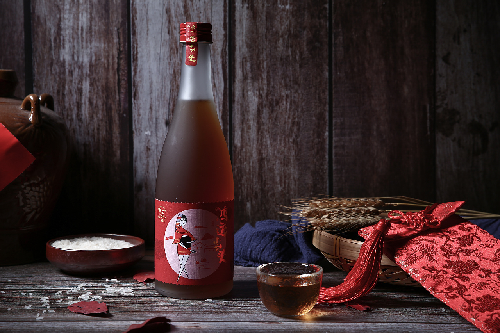
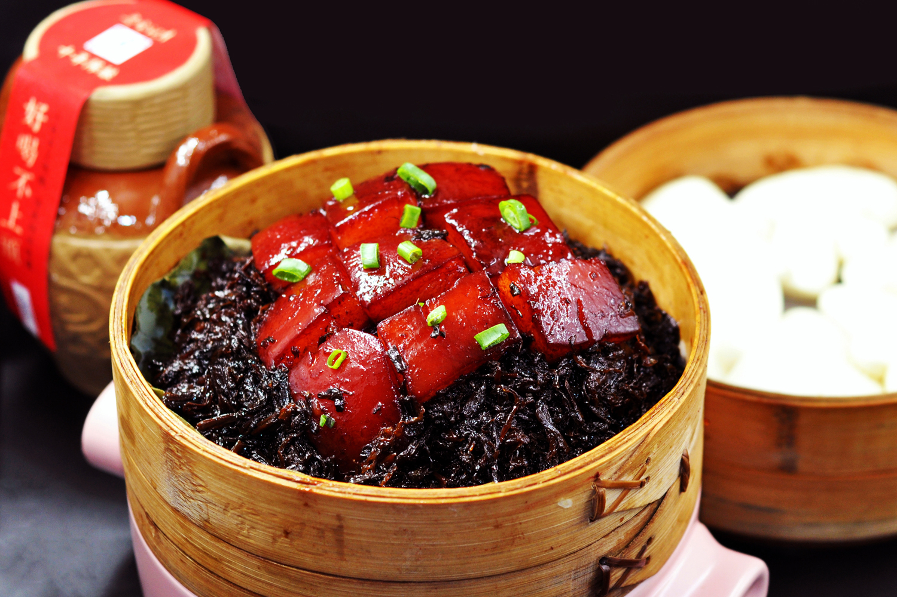

女儿红是浙江省绍兴市的汉族传统名酒，女儿红酒是一种具甜、酸、苦、辛、鲜、涩6味于一体的丰满酒体，加上有高出其他酒的营养价值，因而形成了澄、香、醇、柔、绵、爽兼备的综合风格。
美食
-

-
梅菜扣肉用五花肉片，炸、蒸、焖，出锅后，梅菜香醇淡雅，扣肉绵软酥糯，口味独立，琴瑟相和；梅干菜焖肉则以方形肉块烧制而成，很像红烧肉，味道非常浓郁厚重,梅菜扣肉回味无穷。
-
黄酒奶茶，基酒，品质上乘，酒味醇正，更适合与奶茶融合；轻轻喝上一口，醇香的奶茶中融合了黄酒酒香，黄酒中和了奶茶的甜腻，二者相互交织，口感醇厚，层次丰富，越喝越香，让人久久无法忘怀！
景点
-
 绍兴鲁迅故里有绍兴鲁迅故居、百草园、三味书屋、鲁迅祖居、土谷祠、长庆寺、鲁迅笔下风情园、绍兴鲁迅纪念馆等一大批与鲁迅有关的人文古迹，是广大游客解读鲁迅作品、品味鲁迅笔下风情、感受鲁迅当年生活情境的真实场所
绍兴鲁迅故里有绍兴鲁迅故居、百草园、三味书屋、鲁迅祖居、土谷祠、长庆寺、鲁迅笔下风情园、绍兴鲁迅纪念馆等一大批与鲁迅有关的人文古迹，是广大游客解读鲁迅作品、品味鲁迅笔下风情、感受鲁迅当年生活情境的真实场所 -
风雅兰亭，书法圣地。兰亭街道紧邻绍兴主城区，是绍兴的后花园。它因2500年前越王句践植兰于此，汉代建有驿亭得名，又因1600年前书圣王羲之挥笔写就的天下第一行书《兰亭集序》闻名中外。
-
安昌可以说是绍兴原汁原味的古镇了，沿河的三里街市还保留着质朴的生活气息，腊肠和酱油是这里的一大特色。古镇依河而建，北岸为商市，南岸是民居，水上众多石桥连接两岸的往来。